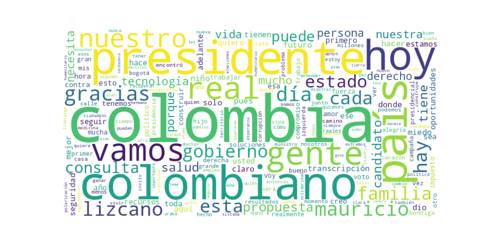

Seguidores: 68,476
1. Perfil de Comunicación: El candidato emplea un estilo de comunicación predominantemente directo y accesible, con una clara intención de conectar con el "ciudadano de a pie". Aunque posee formación técnica (se presenta como experto en tecnología), evita deliberadamente un lenguaje elitista o burocrático. Su tono es conversacional, cercano y, en ocasiones, coloquial (e.g., "chèvere", "pónganse las pilas"). Utiliza un lenguaje popular y emocional, buscando identificarse con la "Colombia real", un concepto que repite para marcar distancia de la clase política tradicional y las élites urbanas. La comunicación es multimodal, combinando mensajes propositivos en texto plano con un uso estratégico de formatos audiovisuales propios de redes sociales (podcast, videos cortos, "reels").
2. Temas Principales: * Seguridad: Es el tema más recurrente y urgente en su discurso. Lo aborda desde una perspectiva de firmeza y control del territorio, con propuestas concretas y de corto plazo: nombrar un Ministro de Defensa "activo", crear bloques de búsqueda, implementar tecnología (GPS en transporte público) y fortalecer a la Fuerza Pública. Ejemplo: "Recuperar el control del territorio... garantizar que quien delinque sí enfrente a la justicia". * Salud: Lo define como una "crisis humanitaria" y "tragedia". Su enfoque es de emergencia y acción inmediata: declarar emergencia humanitaria, crear un corredor humanitario para medicamentos y girar recursos directamente a hospitales. Critica la burocracia y la corrupción en el sistema. Ejemplo: "La salud no puede seguir esperando. Los colombianos merecen respuestas ya". * Tecnología: Se presenta como el "candidato de la tecnología", planteándola no como un tema sectorial, sino como el eje transversal de su programa de gobierno y la solución para el desarrollo, la productividad y la eficiencia estatal. Propone conectividad universal, formación masiva en habilidades digitales y entregar dispositivos a estratos bajos. Ejemplo: "La tecnología es la base de nuestro plan de desarrollo". * Anti-polarización / Centro Unidos: Se posiciona como la alternativa a los "extremos" que, según él, representan el uribismo y el petrismo. Critica la "industria de la polarización" como un negocio y aboga por un "centro fuerte y unido" que priorice soluciones sobre ideologías. Ejemplo: "Colombia no quiere extremos, quiere resultados y soluciones". * Economía Popular: Con un enfoque en el pequeño empresario, el tendero y el empleo joven. Propone bajar impuestos a las pymes, financiar el primer empleo juvenil y combatir el "gota a gota". Su narrativa económica está ligada a la oportunidad y la dignidad del trabajo. Ejemplo: "Apoyar al tendero es fortalecer nuestros barrios".
3. Tono y Sentimiento Dominante: El tono general es propositivo y de urgencia, pero enmarcado en un sentimiento de esperanza realista. Es predominantemente crítico hacia el statu quo, el gobierno actual, los extremos políticos y la clase tradicional ("políticos de profesión"). Sin embargo, evita un tono de rabia o insulto, optando por una crítica más metodológica. Hay un fuerte componente emocional y personal, especialmente al hablar de familia, hijos y víctimas, lo que busca generar identificación y confianza. Se proyecta como un líder serio, con método y resultados, en contraposición al "espectáculo" y la "payasada" que atribuye a otros.
4. Palabras Clave de Poder: * "La Colombia real": Su eslogan central. Define a su electorado ideal: la gente trabajadora, fuera de las élites y la burbuja política. * "Sin miedo": Objetivo último en seguridad y estado de ánimo deseado para el país. * "Derecho a la alegría": Su promesa de valor emocional, el estado final que busca para los colombianos. * "Resultados / Soluciones concretas": Se opone a la promesa vacía y al discurso ideológico. * "Propuestas / Plan": Refuerza su imagen de candidato serio y preparado. * "Primeros días / Primer día": Comunica decisión y velocidad de ejecución. * "Tecnología": Su marca personal y su propuesta distintiva de desarrollo. * "Acabar con la industria de la polarización": Enmarca su discurso político como una lucha contra un sistema perverso.
5. Conclusión Estratégica: La estrategia de comunicación de Mauricio Lizcano está cuidadosamente diseñada para construir una tercera vía creíble y moderna. Se dirige a un electorado amplio, desencantado con la polarización tradicional, que prioriza la seguridad, la salud y las soluciones prácticas sobre la ideología. Habla a la "clase media trabajadora", a los informales, pequeños empresarios y jóvenes urbanos que se sienten ignorados por el debate entre extremos. Su discurso busca evocar confianza a través de la competencia (el "candidato técnico"), identificación a través de la cercanía (el "candidato de la calle") y esperanza a través de un proyecto de país moderno (el "candidato de la tecnología"). No vende una revolución, sino una gestión eficiente, humana y con visión de futuro, posicionándose como el líder sensato que puede "deshipnotizar" a Colombia y conducirla hacia la "alegría" y el progreso concreto.
1. Resumen del Patrón de Éxito: El corpus revela una fórmula de éxito basada en una combinación potente de concreción propositiva y confrontación emocional. El candidato estructura su mensaje más viral en dos partes: primero, presenta una propuesta técnica, tangible y aparentemente ejecutable (como entregar 5 millones de computadores), estableciendo una imagen de eficacia y conocimiento. Inmediatamente después, o en el mismo video, contrasta esta capacidad con una denuncia emocional y urgente de una falla del gobierno actual (inseguridad, descontrol en cárceles, impuestos), creando un puente entre "lo que yo puedo hacer" y "lo que ellos no hacen". La emoción predominante es una indignación canalizada hacia la esperanza, ofreciendo una solución específica como antídoto a un problema concreto.
2. Tácticas de Comunicación Clave: * Propuesta Concreta como Antídoto: No vende solo ideas, sino "objetos" y métricas tangibles (5 millones de dispositivos, GPS obligatorio, bloques de búsqueda). Transforma la política abstracta en una promesa de gestión verificable. * Contraste Binario y Definición del "Enemigo": Estructura su discurso en un "Ellos vs. Yo". "Ellos" (gobierno actual, otros políticos) son asociados con el ego, la incompetencia ("Pablo Escobar manejaba las cárceles"), la huida del debate y los impuestos. "Yo" representa las ideas, los resultados, la tecnología y la autoridad recuperada. * Apelación a la Urgencia y la Indignación Moral: Usa casos específicos y dramáticos (secuestro de Diana Ospina, cárcel de Itagüí) para personificar los problemas nacionales, generando una indignación compartida y luego se posiciona como la voz de esa indignación y la solución inmediata. * Lenguaje de Gestión y Técnica: Utiliza términos como "capital de riesgo", "georreferenciación", "reconvención de pozos", "vocaciones productivas". Esto le permite hablar con autoridad a un público que busca soluciones "serias" y no solo discursos, diferenciándose del populismo tradicional.
3. Temas de Mayor Resonancia: Los temas que generan mayor engagement son aquellos donde fusiona una crítica visceral al presente con una oferta tecnocrática del futuro: 1. Inseguridad Urbana (Bogotá): Es su tema más potente, especialmente al vincularlo a casos reales y soluciones tecnológicas específicas (GPS, cámaras). 2. Acceso Tecnológico como Equidad: La promesa de internet y dispositivos para estratos 1 y 2 resuena por su concreción y por abordar la brecha digital como núcleo de la injusticia social. 3. Falta de Autoridad del Estado: Denuncia la pérdida de control (cárceles, fronteras, negociación con delincuentes) y lo contrasta con su promesa de "recuperar la autoridad" desde el primer día. 4. Impuestos y Gestión Económica: Critica los nuevos impuestos no solo como injustos, sino como "innecesarios", proponiendo eficiencia administrativa (recortar burocracia) como alternativa, apelando al ciudadano y al empresario agobiados.
4. Perfil de la Audiencia Implícita: El lenguaje apunta a una audiencia urbana, pragmatica y desencantada. No es una base ideológica ferviente, sino ciudadanos (posiblemente de clases media y media-baja) que: * Están fatigados de la polarización emocional vacía y buscan "resultados". * Se sienten directamente afectados por la inseguridad y la economía. * Valoran soluciones concretas y un discurso que mezcla comprensión técnica con emociones legítimas (miedo, indignación). * Pueden ser indecisos o centristas que rechazan tanto el populismo de izquierda como la retórica tradicional de derecha, buscando una "alternativa eficiente".
5. Conclusión Estratégica: La clave fundamental del poder de su discurso es su capacidad para operar como un "Gerente Nacional en Campaña". No es un ideólogo ni un revolucionario; es un solucionador. Su potencia reside en la secuencia: 1. Identifica un problema que causa dolor real (emocional). 2. Denuncia la incompetencia actual que lo permite (confrontación). 3. Ofrece una solución concreta, casi como un producto o servicio, often con un componente tecnológico (esperanza gestionable). Esto lo diferencia del discurso político tradicional, que suele quedarse en el diagnóstico emocional o en la promesa abstracta. Él vende "software y hardware" para el Estado: GPS, computadores, bloques de búsqueda, reformas tributarias específicas. Es la politización de la gerencia, y su éxito muestra que, para un segmento crucial del electorado, la mayor esperanza hoy no es un cambio de sistema, sino un CEO capaz para el Estado.

Caption: El desarrollo de las regiones se construirá con tecnología, aprovechando las vocaciones productivas propias de cada territorio. Al articular esfuerzos entre el gobierno, el Estado, el sector empresarial y el comercio local, impulsaremos aquello que cada región hace mejor, transformándolo en oportunidades reales de crecimiento y bienestar para su gente.
Likes: 90 | Comentarios: 8 | Reproducciones: 1,249
Ver en InstagramCaption: Algunos creen que ya ganaron y por eso le huyen al debate. Confían en el ruido, en las emociones y en un “periodicazo” para sumar votos. Yo creo en las ideas, en las propuestas y en los resultados.Ahí es donde de verdad se construye el futuro. @elespectador
Likes: 131 | Comentarios: 12 | Reproducciones: 2,056
Ver en InstagramCaption: Mi propuesta es clara: cobertura total de internet y acceso a dispositivos tecnológicos para los estratos 1 y 2. Conectarse hoy es tener oportunidades para abrirse al mundo. Vamos a entregar más de 5 millones de computadores a colombianos de escasos recursos. Con tecnología, cerramos brechas y construimos futuro.
Likes: 35 | Comentarios: 0 | Reproducciones: 617
Ver en Instagram